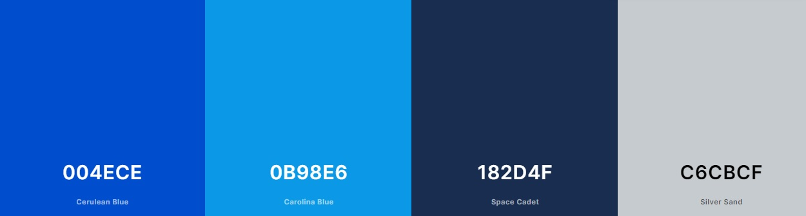

Color Palette:

The main color of the site will be
"Cerulean Blue: #004ECE" and darker tint
which will be used for the background elements.
The secondary color for the site will be
Space Cadet: #182D4F" Which will
be used for background elements as well as some sub-headline
structures.
Accent colors include:
The key accent color will be
"Carolina Blue: #0B98E6"
It will be used on elements such as Call-To-Action locations,
navigation and link hover.
"Silver Sand: #C6CBCF"
This color will be used for the background in the main element .
Color Theory:
Monochromatic Harmony
The blue color it is one of the favorites between people, it is a invitetive color. It is colorful enough that young children will be atttracted to it, yet sophisticated enough that adults won't feel out of place engaging with it.
Color Codes:
--ceruleanblue: #004ECE;--spacecadet: #182D4F;
--carolinablue: #0B98E6;
--silversand: #C6CBCF;
--main: #001219;
--accent: #ae2012;
--white: white;